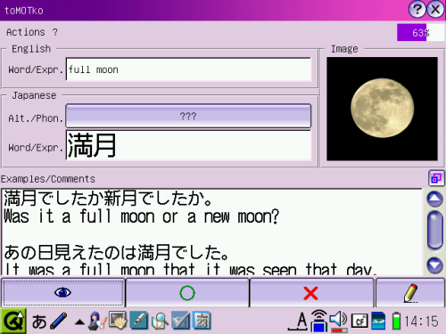
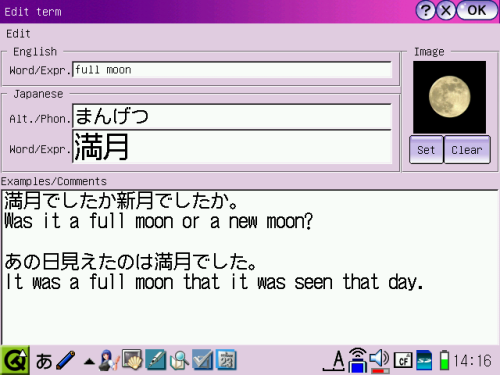

The quiz (shown below) is the main reason for the existence of toMOTko. It's where the learning of new vocabulary takes place. It's where you will spend most of your time using toMOTko.
You can start a Quiz by selecting the item in Actions menu. You must have chosen prealably some words with the Glossary Manager. If you had previously started a quiz in the currently selected languages, toMOTko will ask you if you want to resume it or not.
Once a quiz is started (or resumed), you will be asked the selected words, one after the other. You can reveal word's information gradually either by clicking the Eye button (at the bottom) or the field buttons (labeled with ???). The Eye button will reveal information gradually according to your preferences.
To signify a right answer to toMOTko (i.e. that you know the word), you click the Green Circle button (at the bottom). To signify a wrong answer (i.e. that you need that word to be asked again), you click the Red X. The completion progress of the quiz is displayed at the top right corner of the quiz window. Signifying a right answer tells toMOTko that you may not need to be asked that word again. Signifying a wrong answer tell toMOTko the opposite, i.e., that you would like that word to be asked again to memorize it better. You can customize this behavior a little bit in the Preferences section.
In case where there is a lot of comments written, you can maximize the comments field by clicking the Double square button. Comments field will also be maximized if you click the Eye button when all the data are already revealed.
There is also a preferences option to hide the quiz buttons to use as much room as possible for the data. See Preferences page for details.
You can scroll the fields horizontally using the left and right arrows, and vertically, using the up and down arrow for the comments field. Using CTRL+Up or CTRL+Down will scroll up or down 1 page at a time.
It may come a time when you need to edit the word, either to make a correction or to add a comment or a note. You can edit the current word clicking the Pencil button (at the bottom). A dialog will appear where you can edit the word's information.
You can enter your modifications in the text fields. You can also set an image clicking on the Set button inside the Image section. Current supported formats include png and gif files (animated or not). Images will be scaled automatically except for animated gif files.
Once you're done editing a term, you click the Ok button or the X button (at the top) to, respectively, save or cancel the modifications.
When the quiz is over, a dialog window will tell you to choose different words in the Glossary Manager before starting another quiz.
If you want to use the Glossary Manager in the middle of quiz, it's no problem. When you want to resume a quiz, as mentioned before, selecting Start the quiz, in the Actions menu, will ask you to resume a previously started quiz or start a new one.